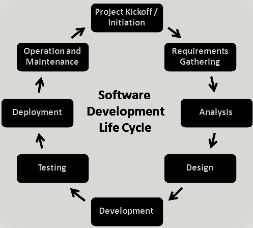
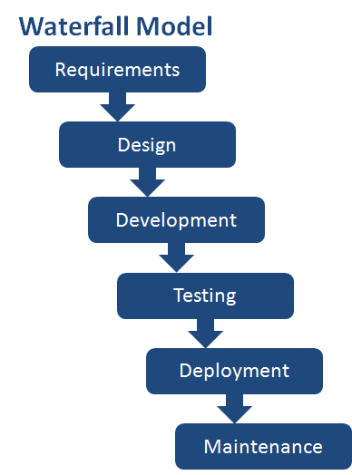
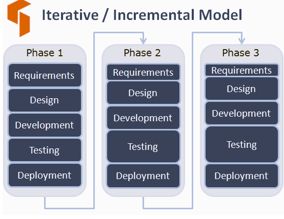
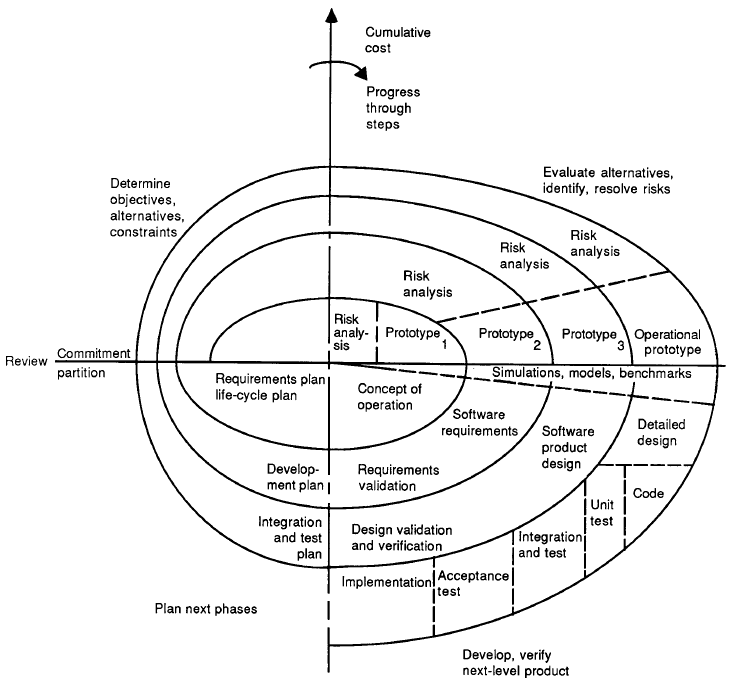
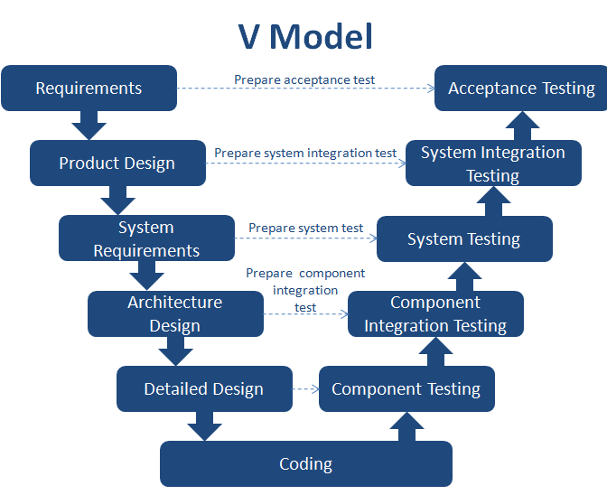
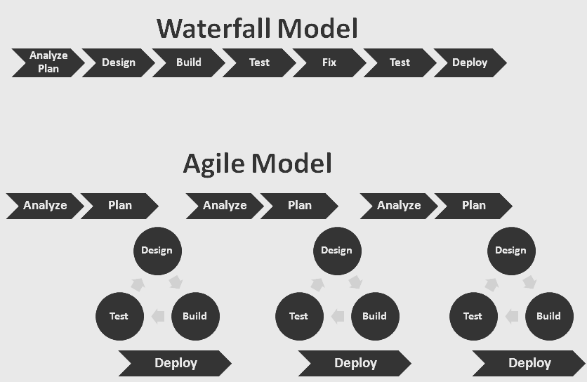

![Genislab]() Genislab Technologies
Genislab TechnologiesIn simpler words, Software Development Life Cycle (SDLC) is the set of processes used to develop and deliver high quality software. It’s recommended to follow Software Development Life Cycle when an IT project is under development. Its beneficial to follow SDLC when you need to combine technical and non-technical activities to deliver high quality software.
In this article, let us understand what Software Development Life Cycle is all about, it’s purpose, different stages in the life cycle and the different models.
Table Of Contents
What is Software Development Life Cycle?
Software Development Life Cycle is generally termed as SDLC. SDLC is the conceptual framework which clearly defines what tasks must be performed at each stage and by whom, within scheduled timeframe and at operational cost.
Why is Software Development Life Cycle necessary?
Software Development Life Cycle is needed in any of the project for the below reasons:
- Enhance the quality of the software
- Define the goals to the team so that developers know what to build and testers know what and how to test
- Reduce the rate of vulnerabilities (fewer or none)
- Management control
- Effective documentation and reduced dependencies
- Effective resource utilization
- Effective cost and time definition
- Ensure the architecture and design are secure
- Define and adhere to the set processes and objectives
- Meet and exceed Customer’s expectations
Stages of Software Development Life Cycle
While the term SDLC may indicate that its closely associated with development, a good software tester should have sound knowledge of this concept since it will be beneficial in their software testing career path.
Right from inception to delivering high-quality software, any software development project follows the series of tasks in the predefined manner.
These tasks are grouped and categorized into stages and the series of these stages forms the Software Development Life Cycle.
At each of the stage in the Software Development Life Cycle, the responsibilities of the tasks are predefined to the specific roles.
Software Development Life Cycle has many models (which are described in the next section of the article) and the project can choose any among them based on the strategies, schedules, complexity and many more business factors.
Note: Testing follows a life cycle called Software Testing Life Cycle (STLC), which is similar to the SDLC but specific to the testing process.
All the Software Development Life Cycle models have almost all the below described stages.
Software Development Life Cycle Stages
- Project Kickoff / Project Initiation
- Requirements Gathering
- Analysis
- Design
- Development
- Testing
- Deployment
- Operation and Maintenance
Project Kickoff / Project Initiation
- This is the first stage in Software Development Life Cycle where the project is initiated.
- The high level scope, problems and solutions are determined and planning is carried out accordingly for other stages.
- Other components that are to be considered in this stage are: Resources, time / schedules, milestones, cost, business benefits and deadlines.
- In case of enhancements to existing projects, the strengths and weaknesses of the current software is studied and the improvements are set as goal, along with the collected requirements.
Requirements Gathering
Here two things are mainly focused:
- What is needed?
- What is not needed?
In “What is needed?” part, the requirements are further analyzed to understand what are:
- Functional Requirements
- Non-functional Requirements
End-user requirements from the customer and other stakeholders (sales people, domain / industry experts, etc.) are collected.
Requirements can be gathered using the following tools / techniques:
- Interviews
- Workshops
- Surveys and questionnaires
- Focus Groups
- Observations / time study
- Brainstorming Sessions
- Document Analysis (Ex: Regulatory requirements)
- Mind Mapping
- Benchmarks
Analysis or System Analysis
- In this stage we analyze each and every achievable requirement.
- These are documented as Software Requirements Specifications (SRS) or Functional Requirements Specifications (FRS).
- Risks are predicted and the action items to mitigate those risks are well-planned at this stage.
- Also, each and every user requirement are analyzed to ensure that they can be met.
- This activity is termed also as System analysis, which helps in enhancing the way the software should behave.
- Entire system is divided into smaller feasible chunks, so that the requirements can be prioritized and taken up for development in the order.
- This is effectively manageable for all the resources (developers, designers, testers, project managers and any other possible roles) to work on the chunks at all the stages in Software Development Life Cycle.
- In many cases requirements gathering and analysis can be carried out at the same time.
System Design
- This is the stage which states “How to achieve what is needed?”
- Software Requirements Specifications (SRS) are now converted to the system design plan, which is commonly known as “Design Specification”.
- All the technical details like technologies to use, project constraints, team’s capability, etc goes into the design specification document.
- The technical architects and developers develop the logical plan of the system which is then reviewed by all the stakeholders.
- The feedback and suggestions collected from the stakeholders are again incorporated into the already developed logical plan.
The most challenging part in this stage is to ensure that the design has the tight security and has less or no exposure to vulnerabilities.
If something goes wrong at this stage, it must be corrected at high priority, failing which has the higher rate of project failure and cost overruns.
Development
This stage in simpler terms is where the “real work begins” and we “build what is needed”.
- The developers start to code as per the requirements and the developed design.
- Along with the coding, all the other required set-up will begin. i.e., the database set up by database admin, interface and GUI creation by front-end developers, etc.
- Along with coding, it is also important for developers to develop unit tests for their module, peer review other module’s unit tests, deploy builds to the intended environment and execute unit tests.
Testing
This stage is the one where the quality check takes place. The developed software is assessed to ensure that all the specified requirements are met.
This is performed by testing team and the focus is to find the defects.
During test case execution, all the defects found are reported in the test management tool and the decision of considering the defect as Valid or Invalid depends on developers.
If the defect is Invalid, it is just rejected and closed.
If the defect is Valid, then it is fixed in the code by the developer and the code fix is provided in the next build for the tester to test whether the defect is fixed or not.
Each defect that is found will have to go through the Defect Life Cycle in the defect management tool.
Again, the testing approach that the project choose depends on various factors: complexity of the project, team’s capability, time, etc.
Deployment
Once the testing is completed and there are no open high priority issues, then comes the time to deploy the build to the Production environment. This is the environment which is accessible by real users. Real users can then use the software as per their needs.
Deploying the build to production can be a complicated process. If the project is an existing application, technology migration is being carried out etc, it can be an extensive procedure.
Depending on business criticality deployment teams may need to ensure that the application continues to function, while the deployment is in progress.
Due to the high cut-over time, the Production deployment usually takes place during non-peak hours and / or weekends.
Operation and Maintenance
This stage is when the “fine tuning” of the software takes place. Once the build is deployed to Production environment, any issues that the real users face are considered as Post-Production issues.
These Post-Production issues are addressed and resolved by the internal team usually termed as Maintenance team.
This stage also addresses minor change requests, code fixes, etc. and deploys them in short intervals.
Entry and Exit criteria for each of the stages
Each stage has specific set of entry and exit criteria.
Entry criteria are the conditions that are required to begin the processing of the current stage and exit criteria are the conditions which sets the stage as completed so that the next stage comes into action.
In general, the exit criteria of the current stage acts as entry criteria to the next stage.
Setting entry and exit criteria helps in determining whether the software development is in the right track and the entire team can focus on the tasks and conditions set for the stage.
It also enhances the effectiveness, efficiency and quality of the software to the greater extent, as the common goal to reach exit criteria of the stage is predefined.
Below is the table which at a high level mentions the entry and exit criteria for each of the stage in Software Development Life Cycle.
| Phase | Entry Criteria | Exit Criteria |
| Project Kickoff / Project Initiation / Planning | Inputs / user-requirements collection from customers and other stakeholders | Acceptance of the project and planning |
| System Analysis and Requirements | Requirements
Change requests |
Software Requirements Specifications Document |
| Design | Software Requirements Specifications Document | Design Specifications Document |
| Development | Software Requirements Specifications Document
Design Specifications Document |
Build
Unit tests Set-up |
| Testing | Software Requirements Specifications Document
Deployed build |
Test Cases
System Testing Defects and their closure |
| Deployment | No high priority defects | Build deployment to Production |
| Operation and Maintenance | Real users to use the software and report any issues they find
Change requests |
Rectify the issues and deploy code fix to Production |
Software Development Life Cycle Models
The Software Development Life Cycle provides the great flexibility within itself. The each of the stages can be tweaked as per the project constraints and requirements. The different models / methodologies have emerged out from the basic Software Development Life Cycle and to choose from them for the project depends on various factors.
Waterfall Model
The Waterfall Model is also known as Linear sequential Model.
- Its called waterfall because all the stages in the Software Development Life Cycle are followed step-by-step and there is no going back between the stages.
- This is the very rigid structure where until completion of the current stage the next stage cannot be started.
- The outcome of the current stage acts as input to the next stage and there is no overlapping of the stages.
- If at all there is any changes in requirements to be handled, then there is no process that defines how to go back to the previous stages(s) to handle it.
- The current cycle must be completed and then the changes must start from the first stage of the cycle.
Waterfall Model is best suitable when:
- Requirements are stable and clearly documented
- Requirements are clear and complete, so there is no ambiguity
- Static technology
- Short duration project
Pros of Waterfall Model
- Easily understandable and simple to use
- Managing each stage is simple as they have well-defined activities to follow, deliverables and reviews
- Sequential stages and no overlapping keeps the stage easy and manageable
- Milestones are clear
- Documentation is strictly maintained so that the chances of dependencies are less
- Small or mid-sized projects can easily adapt this model
Cons of Waterfall Model
- Dependency on the previous stage to complete may cause delays
- High maintenance cost
- Uncertainties and risks are very high
- By the completion of the cycle, the software may be not competitive enough in the market to maintain the standards
- Complex, long-term projects cannot rely on this model
- Cannot handle change requests between the cycle is in progress
Iterative Model
Iterative model is the one where the complete software is developed in multiple iterations, where the iteration follows Waterfall model.
- In each iteration, the subset of requirements is considered for development and they are integrated with the previous iteration.
- Tailoring the iterations leads to the software development in incremental way.
- Therefore, the Iterative model is sometimes referred to as “Iterative or Incremental Model”.
- It is basically developing the basic modules in the first iteration and then adding the other modules to it in the next iterations.
The main thing to focus here is to prioritize the modules that goes into different iterations.
This usually is taken care in the design stage. This model ensures that each iteration undergoes rigorous validation of the developed requirements.
Every cycle / iteration here will have the tests to repeat for the previous cycle / iteration and the tests for new modules added.
Iterative Model is applicable when:
- Final software’s requirements are well-defined
- Large-sized projects
- Basic and main tasks are clear and they may get enhanced later
- Market constraints are well-known and by the time the software gets released it still be applicable
- Scope for new technology to incorporate
Pros of Iterative Model
- Basic modules / functions can be developed first and then the remaining ones can be added in chunks
- Supports parallel development
- Measurable progress
- Easy to test and debug
- Risks are easy to control and mitigate within the iteration
- Each iteration is a lesson to improvise the process and eliminate the repetition of mistakes
- Every iteration results in partial operational software
- Can incorporate the change requests in the next iterations
- Customer evaluation and feedback is facilitated which enhances the quality of the software being developed
- As the iterations have defined timelines, the project ending can be pre-determined and defined
- Documentation effort is reduced and design is focused
Cons of Iterative Model
- Small-sized projects cannot adapt Iterative model
- Management is the continuous activity to be handled
- No scope for change in design
- Need of more resources and planning
- Risks cannot be determined for the later stages
- Risk Management requires highly skilled resources
- Large effort needed for rigorous validations when the code fixes are done at later iterations
- Usually, Documentation and Configuration Management are not followed strictly which leads to difficulties in tracing developed software back to the requirements
- Project management is not intensive which leads in deviating from formal processes to be followed
Spiral Model
The combination of Waterfall and Iterative models leads to Spiral Model. This model is mainly to analyze the risks and to know when to move to the next stage. This Model works quite differently. There are four different phases in this model which are basically the predetermined time frames.
Determine Objectives, Alternatives, Constraints
The baseline here captures the business requirements. At the subsequent spirals, it enhances the identification of system, subsystem and unit requirements from the business requirements.
It helps the software to mature in terms of clear, complete and concise requirements through continuous review process.
Identify and Resolve Risks
This is the phase where the risks are identified and the measures to control and prevent them are defined.
The risk analysis and planning to resolve them must be taken care by highly-skilled professionals as this entire model mainly focuses on Risk-Management.
With subsequent spirals, the risk analysis grows stronger and can foresee the risks that may arise at the later stages.
Develop and Test
At the baseline of the spiral, the Proof of Concept (POC) is developed, where the prototype and the likely design of the software is developed.
The customer feedback is collected on the POC and then the actual work is started. The subsequent spirals encourage building the actual software with high clarity on requirements and design.
Each of the software build is version numbered and tested against the requirements.
Plan the Next Iteration
Upon collecting the customer feedback on the software build, plan the next iteration.
This phase is to analyze and take the corrective measures in the next iteration to avoid schedule slippage and cost overrun.
The plan is made ahead so that the movement to next stage happens on-time even though the previous stage has not yet completed.
The plan is derived out from the previous experiences, statistic data and the measures.
Spiral Model is best adaptable when:
- Budget constraint
- Risk evaluation factor is high priority task
- Long-term projects and requirements change over time
- Requirements are not clearly known to customer himself
- Proof of Concept is needed
- Customer feedback is needed at the end of every spiral to adapt any changing requirements
- Requirements needs evaluation
Pros of Spiral Model
- Facilitates early user involvement in the development process
- Changing requirements can be accommodated in well-defined manner
- Requirements can be evaluated for accuracy before staring the actual design
- Highly controlled Risk Management
- New features can be added at the later stages also
- Earlier working prototypes helps in collecting actual feedback on the software and enhance as per usability requirements
- High scalable
- Phase can be tweaked to finish it early if the risk is high at the next phase
Cons of Spiral Model
- Expensive and time consuming to reach final software
- Highly skilled professionals are required for risk management
- Poorer the risk-management, higher the project failure rate
- Not suitable for small, simple projects
- Documentation is more and time consuming
V Model
The V Model is the tweak to Waterfall model, where the development and testing activities go together.
Instead of having the stages in linear way, the V Model takes the stages after implementation in the upward direction, forming the shape of alphabet “V”.
Early test planning makes the V Model to be different from that of Waterfall Model.
The Left side of V Model are all the Verification activities (Requirement Analysis, Architecture, Design) and the right side are all the Validation activities (Unit Testing, Integration Testing, System and Acceptance Testing). These two sides are connected through the Development Stage.
Understanding the V-Model:
- During the requirements stage, the System and Acceptance test cases are identified and documented.
- These Test Cases are executed during the System and Acceptance Testing Stage in development cycle.
- During the Architecture stage, the Integration test cases are identified and documented. These Test Cases are executed during Integration testing stage in development cycle.
- During the Design stage, the unit test cases are identified and documented by developers. These test cases are executed during the Unit testing stage in development cycle by developers.
V Model is best adaptable when:
- Requirements are clear and well-documented and stable
- Static technology and the project team is aware of the technology
- No ambiguity in requirements
- Short-term projects
- Highly-skilled professionals are needed
- Early-testing is required
Pros of V Model
- Early testing helps in identifying the defects at initial stages
- Requirement gaps can be identified very early
- Milestone can be reached sooner
- Short-term, small projects do not benefit from V Model
- Easy to control and manage as the stages are highly disciplined
Cons of V Model
- Rigid, lack of flexibility
- Complex and object-oriented projects cannot rely on V Model
- Ongoing projects do not benefit
- Changing requirements cannot be supported to higher extent
- Once the actual testing stage is reached, it is not very feasible to go back and change the functionalities
- Working software is not available until the end of life cycle
Big Bang Model
Big Bang Model is the model which do not follow any process as such. The project starts with the set amount of money, time and resources. As and when the requirements start to come-in, the development stage starts.
The primary focus is coding and delivering the software. There is no planning or formal methods to follow in this model.
Each module is validated at their level and when all the modules are ready individually, they are integrated at once.
Any integration defects found, will be debugged at modules level by detaching them from the entire software.
Big Bang Model is suitable when:
- Customer is not sure on what is needed
- Small projects – school, enterprises, etc
Pros of Big Bang Model
- Very simple model and easily understandable
- No formal planning or heavy processes
- Limited resources
- Provides flexibility to incorporate ideas while developing
- Managing is easy
Cons of Big Bang Model
- Not suitable for complex, object-oriented projects
- May become expensive at times
- Long term projects cannot rely on this model
- Involves many complexities throughout the project
Agile Methodology
Agile Methodology and Waterfall Approach are very different in nature. The way they handle the entire life cycle is complete different and have their own terms of benefits and drawbacks.
Agile Model
Agile model is covered in detail in our articles on Agile. The following explanation is intended to give you a high level overview of the model.
Agile is the methodology where the requirements, development and testing stages are all ongoing processes and the system analysts, developers, testers and customers all work together as a single team.
Here the releases are shorter, usually 6 – 8 weeks and each release has the timeframe called “Sprints” which is of 2 weeks (typically). Each sprint produces a work product.
The collected requirements (user stories) are prioritized for the release and they are again prioritized for sprints. All the resources in the team work towards the identified user stories for the sprint.
When the developers are coding the user stories, testers identify acceptance test cases, system test cases, regression test cases for the user stories.
When the build is deployed, testers execute the identified test cases and reports defects and developers focus on fixing the defects and makes sure to close all the defects within the sprint itself. Once one sprint ends the next spring begins.
This goes on in all the other sprints which keeps including new features and enhancements to the existing features.
Customer interaction is very high in this methodology and the feedback and suggestions are collected at regular intervals to enhance the quality of the software.
Principles of Agile:
- Individuals and interactions are given more priority than processes.
- Working software is considered than heavy documentation of the software
- Customer collaboration is very extensive and the continuous feedback, suggestions and discussions helps in improving the software to meet user needs
- Respond to change in requirements dynamically. High priority requirements if coming in later stages, then the medium or low-level priority items are moved right to accommodate the high priority ones.
Agile Methodology is best suitable when:
- Dynamic change in user requirements
- Early returns of Investment
- Low budget for changing requirements
Pros of Agile Model
- People oriented, more focus is on enhancing skill sets
- Minimum documentation saves time
- Supports dynamically changing requirements
- Helps in focusing on common goal
- High customer interaction improvises the quality continuously
- Highly flexible and realistic approach
- Early partial working software
- Less resources and equally distributed tasks
- Minimized risks
Cons of Agile Model
- Cannot finalize on the cost
- Client-oriented team
- Does not address dependencies
- Lack of detailed documentation causes challenging situation for the new members in the team
How to select the right Software Development Life Cycle Model
As the Software Development Life Cycle has many models, it is very important and the broader issue to select the right model for the project.
This is very challenging and crucial for most of the organizations, as the model selected and the criteria used to select it adds the value to the organization.
Selecting the right Software Development Life Cycle requires the below steps to be followed:
- Learn and get insight to all the SDLC models. Understand the flow, processes involved, stages, advantages, disadvantages and relate them to the business impacts.
- Select the SDLC model and focus and learn the domain, business criteria, business objectives, technical capability of the team, technology constraints and stakeholder concerns
- Understand whether the selected SDLC model fulfills the general criteria like:
- Size of the team
- Skill sets that the team members possess
- Technology for implantation
- Business and stakeholder priorities
- Local or distributed team structure
- Complexity of the software
- Quality of the requirements
- Type of the project
- Documentation
- Reusability
- Project Management
- Complex system
- Reliable system
- Duration and milestones
- Cost limitations
- Decide whether to go with the selected model or evaluate if any other SDLC models closely matches the criteria.
- Once the decision is taken, clearly document all the criteria chosen for selection and send it to stakeholders for review and agreement
Any mistake or misunderstanding in selecting the right SDLC model will result in high failure rate for the project. In the end, any SDLC model selected should fulfill both Business and Organizational objectives.
Other popular articles:
- What is Iterative model- advantages, disadvantages and when to use it?
- What are the Software Development Life Cycle (SDLC) phases?
- What are the Software Development Models?
- What is Incremental model- advantages, disadvantages and when to use it?
- What is V-model- advantages, disadvantages and when to use it?
mani says
can you provide scenerio based questions of models?